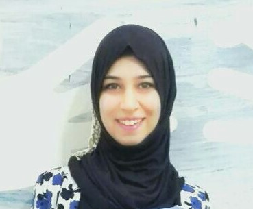
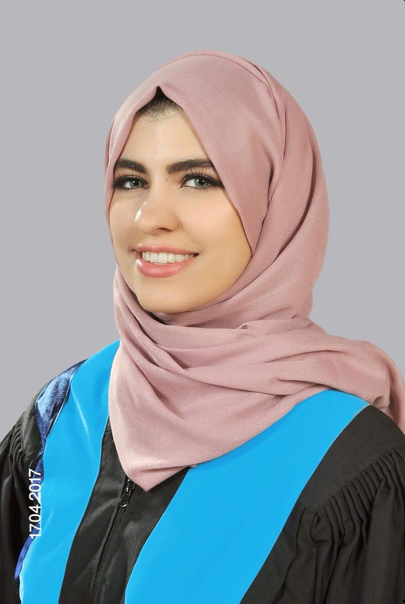
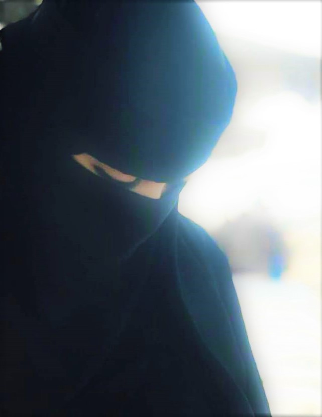
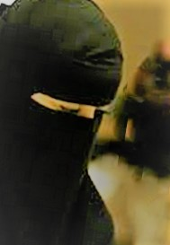
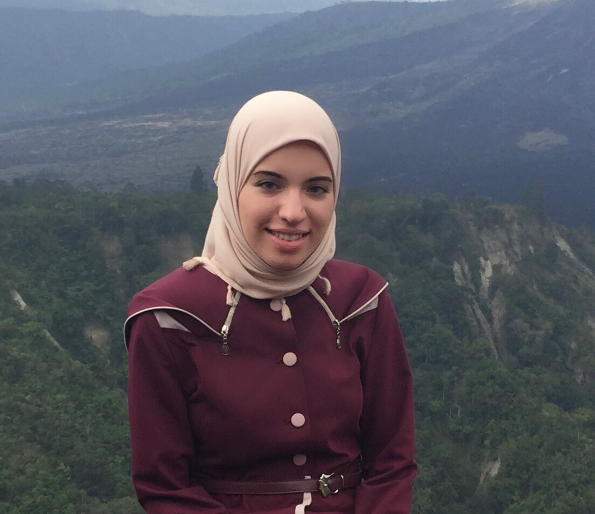
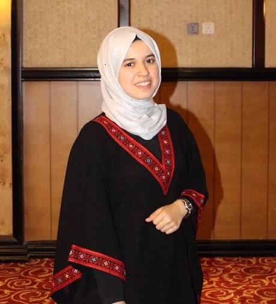

Founder, CEO, Shereen Nanish, 23-year old, Jordanian, Master's degree in Journalism & New Media from Jordan Media Institute, Bachelor's degree in English Language & Linguistics from JUST. A dreamer, meditator and seeker. Work as film maker, content creator, translator and writer. Interested in community volunteering, film making and painting. Believes that making this world better is a worship, and this is where From Every Example come from.
Project Manager, Reporter\Photographer and Multimedia officer, Fatima Mohammou, 24-year old, Moroccan, Master's degree in Documentary Cinema, doc-film maker, works as a photographer at Fael Khair association, speaks French, Arabic and Amazigh languages, and currently learning English and Turkish. Believes that "If someone wants to do some work, he\she should perform it in perfect manner".
Editorial Manager, Sara Nahas, Egyptian, Bachelor's degree in Business Administration from Ain Shams University, License in the Arabic Language and Islamic Studies from Dar Al-Olom Cairo University, Diploma in teaching Arabic for non-native speakers, Diploma in Islamic Studies. Experience in teaching and interested in community volunteering.
Creative Manager, Hala Said, 22-year old, Jordanian, Bachelor's degree in Biotechnology and Genetic engineering. Interested in genetic diseases and stem cells. Believes that "you have one life take advantage of it, don’t hesitate, dream believe achieve".
Development Specialist, Maryam Salem, 25-year old, Yemeni, Medical Student, writer, meditator and passionate reader. Interested in Arab and international literature. Love handcrafts and a good coordinator. Believes in Inner Peace and that Islam is a moderate religion. Believe that "we should try to make one good thing or more everyday if we could".
Media Planner, Mariam Bouabi, 24-year old, Moroccan, architect, interested in Islamic architectural heritage, playwright, artist. Believes that "It's everyone's responsivity to make this world better, and one can't achieve that unless he carried a message in his\her heart".
Program Coordinator, Amani Ahmed, 24-year old, Yemeni, Bachelor's degree in Medical Laboratories. Interested in designing, editing and handicrafts. Experience in editing videos and creating content.
Audio Specialist, Hajar Al-Hanbali, 24 year old, Egyptian, Bachelor's degree in nuclear and radiological engineering from the University of Alexandria, interested in humanities and psychology. Believes in "Be Beautiful from the inside before the outside, because the appearance will disappear while inner beauty will remain".
Web Content Manager, Aseel Abu-Tahoun, 22-year old, Jordanian. Doctor of Pharmacy, photography and editing skills. Believe that "knowledge is a message we carry with us to rise people and us to higher levels, make changes, touch the sky with our hopes, we were not created in vain.
-

Shereen Nanish
-

Fatima Mohammou
-

Sara Nahas
-

Hala Said
-

Maryam Salem
-

Mariam Bouabi
-

Amani Ahmed
-

Hajar Al-Hanbali
-

Aseel Abu-Tahoun